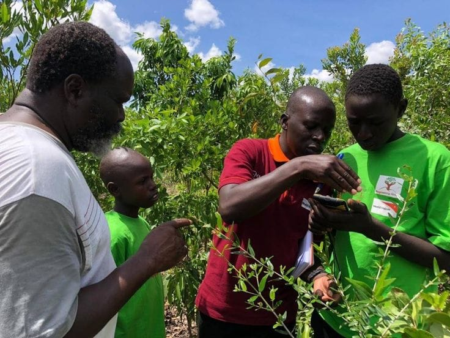

Ideas in development
Projects shaped around local priorities
We share public information about RweDI projects here as plans and partnerships are confirmed.

Proposed project
Kithoma Youth-Led Climate-Smart Farming Pilot
Location: Kithoma Parish, Kasese District
The proposed pilot would bring young facilitators and farming households together to identify a priority weather-related farming problem. Together, they would test an affordable adaptation on demonstration plots and share practical lessons with mothers, fathers and out-of-school youth.
The project is designed as a six-month pilot. The duration and any participant figures are proposed planning targets, not confirmed activities or achieved results. No enrolment dates or participant numbers are being published until they are confirmed.
Proposed six-month timelineDemonstration plotsCommunity learning
Discuss a partnership